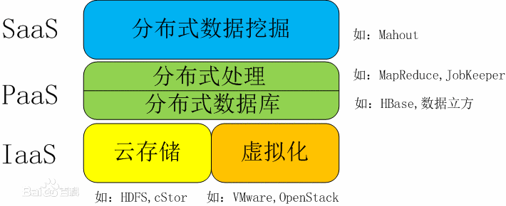

云计算
2007年以来，“云计算”成为了计算机领域最令人关注的话题之一，同样也是大型企业、互联网建设着力研究的重要方向。因为云计算的提出，互联网技术和IT服务出现了新的模式，引发了一场变革。
云计算（cloud computing）是分布式计算的一种，指的是通过网络“云”将巨大的数据计算处理程序分解成无数个小程序，然后，通过多部服务器组成的系统进行处理和分析这些小程序得到结果并返回给用户。云计算早期，简单地说，就是简单的分布式计算，解决任务分发，并进行计算结果的合并。因而，云计算又称为网格计算。通过这项技术，可以在很短的时间内（几秒钟）完成对数以万计的数据的处理，从而达到强大的网络服务。
现阶段所说的云服务已经不单单是一种分布式计算，而是分布式计算、效用计算、负载均衡、并行计算、网络存储、热备份冗杂和虚拟化等计算机技术混合演进并跃升的结果。
云计算特点：高灵活性、可扩展性、性价比高、可靠性高、虚拟化技术、按需部署。
服务类型分为三类
即基础设施即服务(IaaS)
平台即服务(PaaS)
软件即服务(SaaS)
这3种云计算服务有时称为云计算堆栈

大数据
经李克强总理签批，2015年9月，国务院印发《促进大数据发展行动纲要》，系统部署大数据发展工作。
大数据（big data），IT行业术语，是指无法在一定时间范围内用常规软件工具进行捕捉、管理和处理的数据集合，是需要新处理模式才能具有更强的决策力、洞察发现力和流程优化能力的海量、高增长率和多样化的信息资产。
大数据的5V特点（IBM提出）：Volume（大量）、Velocity（高速）、Variety（多样）、Value（低价值密度）、Veracity（真实性）
数据需要特殊的技术，以有效地处理大量的容忍经过时间内的数据。适用于大数据的技术，包括大规模并行处理（MPP）数据库、数据挖掘、分布式文件系统、分布式数据库、云计算平台、互联网和可扩展的存储系统。
大数据包括结构化、半结构化和非结构化数据，非结构化数据越来越成为数据的主要部分。
最小的基本单位是bit，按顺序给出所有单位：bit、Byte、KB、MB、GB、TB、PB、EB、ZB、YB、BB、NB、DB。
它们按照进率1024（2的十次方）来计算：
1 Byte =8 bit 1 KB = 1,024 Bytes 1 MB = 1,024 KB
1 GB = 1,024 MB 1 TB = 1,024 GB 1 PB = 1,024 TB
1 EB = 1,024 PB 1 ZB = 1,024 EB 1 YB = 1,024 ZB
1 BB = 1,024 YB 1 NB = 1,024 BB 1 DB = 1,024 NB
物联网
1998年，美国麻省理工学院创造性地提出了当时被称作EPC系统的“物联网”的构想。
1999年，美国Auto-ID首先提出“物联网”的概念
2005年11月17日，在突尼斯举行的信息社会世界峰会（WSIS）上，国际电信联盟（ITU）发布了《ITU互联网报告2005：物联网》，正式提出了“物联网”的概念。
物联网（The Internet of Things，简称IOT）是指通过 各种信息传感器、射频识别技术、全球定位系统、红外感应器、激光扫描器等各种装置与技术，实时采集任何需要监控、 连接、互动的物体或过程，采集其声、光、热、电、力学、化 学、生物、位置等各种需要的信息，通过各类可能的网络接入，实现物与物、物与人的泛在连接，实现对物品和过程的智能化感知、识别和管理。物联网是一个基于互联网、传统电信网等的信息承载体，它让所有能够被独立寻址的普通物理对象形成互联互通的网络。
物联网（ IoT ，Internet of things ）即“万物相连的互联网”，是互联网基础上的延伸和扩展的网络，将各种信息传感设备与互联网结合起来而形成的一个巨大网络，实现在任何时间、任何地点，人、机、物的互联互通。
物联网是新一代信息技术的重要组成部分，IT行业又叫：泛互联，意指物物相连，万物万联。由此，“物联网就是物物相连的互联网”。这有两层意思：第一，物联网的核心和基础仍然是互联网，是在互联网基础上的延伸和扩展的网络；第二，其用户端延伸和扩展到了任何物品与物品之间，进行信息交换和通信。因此，物联网的定义是通过射频识别、红外感应器、全球定位系统、激光扫描器等信息传感设备，按约定的协议，把任何物品与互联网相连接，进行信息交换和通信，以实现对物品的智能化识别、定位、跟踪、监控和管理的一种网络。
人工智能
2019年6月17日，国家新一代人工智能治理专业委员会发布《新一代人工智能治理原则——发展负责任的人工智能》，提出了人工智能治理的框架和行动指南。这是中国促进新一代人工智能健康发展，加强人工智能法律、伦理、社会问题研究，积极推动人工智能全球治理的一项重要成果。
人工智能（Artificial Intelligence），英文缩写为AI。它是研究、开发用于模拟、延伸和扩展人的智能的理论、方法、技术及应用系统的一门新的技术科学。
人工智能是研究使计算机来模拟人的某些思维过程和智能行为（如学习、推理、思考、规划等）的学科，主要包括计算机实现智能的原理、制造类似于人脑智能的计算机，使计算机能实现更高层次的应用。
区块链
2008年由中本聪第一次提出了区块链的概念
简单来说，区块链是一个分布式的共享账本和数据库，具有去中心化、不可篡改、全程留痕、可以追溯、集体维护、公开透明、开放性、独立性、匿名性等特点。这些特点保证了区块链的“诚实”与“透明”，为区块链创造信任奠定基础。而区块链丰富的应用场景，基本上都基于区块链能够解决信息不对称问题，实现多个主体之间的协作信任与一致行动。
区块链是分布式数据存储、点对点传输、共识机制、加密算法等计算机技术的新型应用模式。
区块链系统由数据层、网络层、共识层、激励层、合约层和应用层组成。